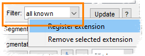

Did you know...
- Right-click on the filter popup widget
- Select the "Register Extension" option
- Enter the extension in the appropriate reading mode
|  |
You have a file with an unrecognized extension? No problem! Add the extension to the list of filters:
|